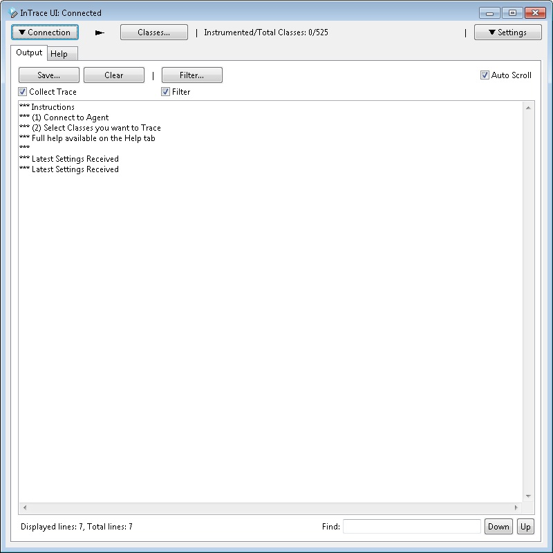

InTrace is a tool which enables the tracing of program execution without recompilation. You can easily trace your own classes, library classes or system classes. This tool can be used by adding a single extra JVM parameter to a new JVM process (see below) or by using the Eclipse plugin.
Have you ever added System.out.println(.) calls to Java code to see what was being executed? This is a common part of writing and debugging an application. However there are two big drawbacks.
1) System.out is not a great API - the output only goes to stdout. What about more advanced output like output to file or output over the network?
2) Adding System.out lines is slow and boring. Why not get the JVM to do this work for you?
InTrace solves both of these issues by allowing you to automatically trace Java classes. InTrace is very quick to setup so you can get started easily.
See How InTrace Works to see more details of the trace which is added.
The trace added by InTrace allows you to record method entry/exit, basic block execution and method arguments.
[14:14:30]:[1]:example.TraceExample:workMethod: {:29
[14:14:30]:[1]:example.TraceExample:workMethod: Arg: foobar
[14:14:30]:[1]:example.TraceExample:exceptionMethod: {:48
[14:14:30]:[1]:example.TraceExample:exceptionMethod: /:51
[14:14:30]:[1]:example.TraceExample:exceptionMethod:CaughtException:54: java.lang.Exception: Exception text
at example.TraceExample.exceptionMethod(TraceExample.java:51)
at example.TraceExample.workMethod(TraceExample.java:31)
at example.TraceExample.otherMain(TraceExample.java:23)
at example.TraceExample.main(TraceExample.java:14)
[14:14:30]:[1]:example.TraceExample:exceptionMethod: Return: seen exception
[14:14:30]:[1]:example.TraceExample:exceptionMethod: }:56
[14:14:30]:[1]:example.TraceExample:intArrayMethod: {:63
[14:14:30]:[1]:example.TraceExample:intArrayMethod: Arg: [1, 2, 3]
[14:14:30]:[1]:example.TraceExample:intArrayMethod: Return: 123
[14:14:30]:[1]:example.TraceExample:intArrayMethod: }:64
[14:14:30]:[1]:example.TraceExample:workMethod: /:36
[14:14:30]:[1]:example.TraceExample:workMethod: }:42
[14:14:30]:[1]:example.TraceExample:otherMain: /:21
1) Download the jars
You need to download the following jars
2) Load Agent into a JVM
Add the following argument to your java process.
-javaagent:./path/to/intrace-agent.jar
3) Connect to agent
When the agent is first loaded it outputs a line to stdout to say which port it is listening on.
## Loaded InTrace Agent. ## InTrace listening on port 9123
The default is 9123 but will use a higher port if listening on this port fails. You can use this port to connect to the Agent and control the settings at runtime.
To connect to the agent, launch the intrace-ui.jar application, enter the connection details (which default to localhost/9123) and press "Connect". Once you are connected the GUI will look like the following.
See the InTrace UI page for full details about this UI.

This project is build regularly using Jenkins courtesy of the CloudBees service. InTrace Jenkins Console